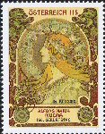

メニュー画面に戻る
メニュー画面に戻る
 画像を見る
画像を見る
 ショッピングカートを利用する
ショッピングカートを利用する
PV12
LIST 2010/09
＜略号＞
BK=切手帳、S/S=小型シート、(シ)=シール式、CEPT=「EUROPA」シリーズ、□=無目打
( )内の数字は、種類の数
全体に取り消し線のあるものは、売り切れです。（2015.05.29）
品番のみに取り消し線があるものは、入荷待ちです。
青文字の品番は、再入荷（在庫僅）です。
最近売り切れの時期が早まっております。
ご注文はおはやめにどうぞ。
★ 恐れ入りますが1000円未満のご注文はお受けできません ★
当店の価格はすべて【税込】です。
| 品番 | 品名 | 単価 |
|---|---|---|
| ＰＶ １ | アメリカ スカウト （シ）(1) | 90 |
| ＰＶ ２ | アメリカ 日曜版マンガ （シ）５連 | 410 |
| ＰＶ ３ | アルバニア CEPT 2009 宇宙 (2) | 1185 |
| ＰＶ ４ | オルダニー ナイチンゲール (6) | 860 |
| ＰＶ ５ | オーストリア 歴史的教会［1］ (1) | 200 |
| ＰＶ ６ | オーストリア ♪作曲家フックス (1) | 200 |
| ＰＶ ７ | オーストリア 最初の女性大臣 (1) | 110 |
| ＰＶ ８ | オーストリア 同性愛者団体 (1) | 110 |
| ＰＶ ９ | オーストリア ラドカースブルク鉄道125年 (1) | 130 |
| ＰＶ１０ | オーストリア グラフェネック城 （シ）(1) | 110 |
| ＰＶ１１ | オーストリア 切手の日 鉄道 (1) | 800 |
| ＰＶ１４ | ベルギー 鳥シリーズ 4.09 キジ (1) | 830 |
| ＰＶ１５ | ベルギー 動物の子 10連 （シ）ＢＫ | 1190 |
| ＰＶ１８ | ベルギー 鉄道175年 新旧 凹(1) | 240 |
| ＰＶ１９ | ボスニア（クロ) CEPT 2010 童話 ２連 | 940 |
| ＰＶ２５ | 台湾 西遊記 (4) | 270 |
| ＰＶ２６ | 台湾 灯台 (4) | 260 |
| ＰＶ２８ | フランス アビニョン(PT60) （シ）凹(1) | 120 |
| ＰＴ７４と同じ品でしたので取消します | - | |
| ＰＶ３２ | イギリス 鉄道 ＳＬの時代 (6) | 1120 |
| ＰＶ３３ | グァンジー 戦時疎開 (6) | 860 |
| ＰＶ３４ | グァンジー ナショナルトラスト (6) | 860 |
| ＰＶ３５ | 香港 生物多様年 (4)＋S/S | 495 |
| ＰＶ３７ | アイスランド 火山大噴火 (3) | 620 |
| ＰＶ３８ | アイルランド PV88の(1)同図案 凹(1) | 160 |
| ＰＶ３９ | イラク 国有鉄道 ＳＬ、ＤＬ (3) | 370 |
| ＰＶ４０ | ジャージー イソギンチャク (6)＋S/S | 1660 |
| ＰＶ４１ | ジャージー クラシックカー［4］ (6) | 960 |
| ＰＶ４２ | 韓国 趣味週間 △型 ２連 | 90 |
| ＰＶ４３ | 韓国 国際森林会議 八角型 (1) | 60 |
| ＰＶ４５ | 韓国 恐竜時代［1］ 凹シートから(4) | 210 |
| ＰＶ４６ | リヒテン CEPT 2010 童話 (1) | 200 |
| ＰＶ４７ | リヒテン 風景展望 ２連 | 290 |
| ＰＶ４８ | リヒテン エネルギー再生 (3) | 750 |
| ＰＶ４９ | リヒテン 四季のファドス城［2］ (2) | 475 |
| ＰＶ５３ | マーヨット 特産のシダ (1) | 110 |
| ＰＶ５４ | マーヨット 総督の館 (1) | 110 |
| ＰＶ５５ | マーヨット マオレ総督 (1) | 110 |
| ＰＶ５６ | マーヨット 籐細工をする人 (1) | 110 |
| ＰＶ６０ | モナコ グリマルディフォーラム10年 (1) | 150 |
| ＰＶ６２ | モナコ 第50回ＴＶ祭 (1) | 565 |
| ＰＶ６５ | モナコ 王家の各地の古城 ４連S/S | 810 |
| ＰＶ６６ | オランダ 城［8］～[11] (4) | 690 |
| ＰＶ６７ | ニューカレドニア 上海万博 (1) | 185 |
| ＰＶ６８ | ニューカレドニア 魚 横３連 | 380 |
| ＰＶ６９ | ニューカレドニア カヌー世界競技 (1) | 130 |
| ＰＶ７０ | ニューカレドニア 絵画 女性と子供 (1) | 185 |
| ＰＶ７１ | ニューカレドニア 中国新年 トラ (1) | 185 |
| ＰＶ７２ | ニューカレドニア 仏語圏連合25年 (1) | 185 |
| ＰＶ７３ | ニューカレドニア ダンベ河 タブ入２連 | 370 |
| ＰＶ７５ | ロシア CEPT 2010 童話 (1) | 80 |
| ＰＶ７６ | サンピェール 絵画 魚 凹(1) | 70 |
| ＰＶ７７ | サンピェール パノラマ３連 鳥ほか 凹 | 1010 |
| ＰＶ７８ | サンピェール サンピェール航空機 凹(1) | 160 |
| ＰＶ７９ | サンピェール 児童画 風景 ２連 | 400 |
| ＰＶ８０ | サンピェール 鳥 アメリカムシクイ (1) | 80 |
| ＰＶ８１ | 南ジョージア 難破船 (4) | 1005 |
| ＰＶ８２ | スウェーデン 推理小説と作家 凹ＢＫ | 1380 |
| ＰＶ８３ | スウェーデン 推理小説と作家 凹ＢＫから５連 | 690 |
| ＰＶ８４ | スウェーデン 推理小説と作家 1種９枚凹特S/S | 1360 |
| ＰＶ８５ | スウェーデン お菓子 漫画 （シ）平ＢＫ | 1380 |
| ＰＶ８６ | スウェーデン お菓子 漫画 （シ）ＢＫから４連 | 550 |
| ＰＶ８７ | スウェーデン お菓子 漫画 別図案 凹(2) | 415 |
| ＰＶ８８ | スウェーデン 凹版芸術３種 凹S/S | 830 |
| ＰＶ８９ | スイス 錯視絵画 (3) | 470 |
| ＰＶ９０ | スイス 恐竜の時代 (3) | 470 |
| ＰＶ９１ | スイス 恐竜の時代 各６枚 S/S(3) | 2800 |
| ＰＶ９２ | スイス 漫画 鼠のフリッツ （シ）(1) | 120 |
| ＰＶ９３ | スイス 漫画 鼠のフリッツ10枚 （シ）ＢＫ | 1200 |
| ＰＶ９４ | スイス 作家ホーラー (1) | 145 |
| ＰＶ９５ | スイス 欧州自由貿易50年 (1) | 200 |
| ＰＶ９６ | スイス 赤十字の父死去100年 (1) | 270 |
| ＰＶ９７ | スイス スイスの作曲家 (2) | 350 |
| ＰＶ９８ | スイス 女性哲学者ハーシュ (1) | 145 |
| ＰＶ９９ | タイ 観光 長大型 (4) | 110 |
| ＰＶ１００ | タイ 選挙委員会 (1) | 30 |
| ＰＶ１０１ | タイ 郵政総局ビル70年 (3) | 90 |
| ＰＶ１０４ | ウクライナ 最初の切手８種 S/S(2) | 510 |
| ＰＶ１０５ | バチカン イースター 石彫り (1) | 190 |
| ＰＶ１０６ | バチカン ボッチチェルリ名画 (3) | 800 |
| ＰＶ１０７ | ワリスフツナ 魚 ２連 | 200 |
| ＰＶ１０８ | ワリスフツナ 母の日 (1) | 180 |
| ＰＶ１０９ | ワリスフツナ 医師来島50年 (1) | 1350 |
| ＰＶ１１０ | ワリスフツナ イースター (1) | 225 |
| ＰＶ１１１ | ワリスフツナ サンゴ 横４連 | 170 |
| ＰＶ１１２ | ワリスフツナ ソーラー発電 ２連 | 1350 |
ショッピングカートを利用する 店主の『雑記帳』を開いてみる
メニュー画面に戻る
店主の『雑記帳』を開いてみる
メニュー画面に戻る